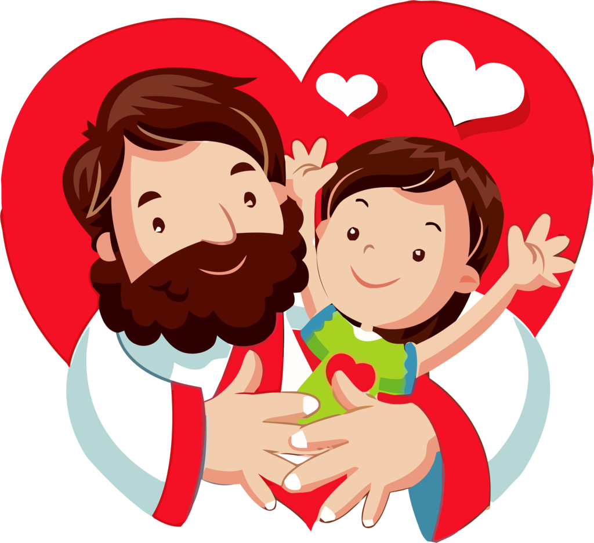
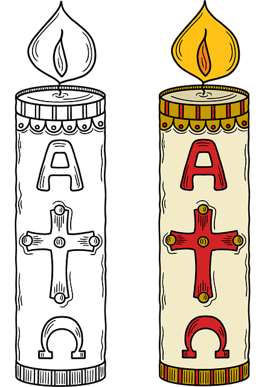

PRIMER MOMENTO: Oración para pedir a Dios el don de la paz.
Para pedir a Dios el don de la Paz, es preciso encontrarnos con Él en la quietud.
Si se tiene la oportunidad de llevar a los niños, niñas o adolescentes a un espacio donde haya quietud, llévenles, puede ser un jardín, capilla o una parroquia, o preparen el salón de clase para que la experiencia sea diferente, se pueden mover las sillas para permitir que se sienten en el suelo, incluso se pueden recostar, podrían pedir que lleven un tapete, o una cobijita para colocar en el suelo.
Comenzamos: Inicia la música suave de meditación.
“El tiempo de la quietud es un tiempo sagrado. Sagrado es lo que está segregado del mundo para dedicarlo a Dios. En la calma silenciosa, el mundo, con su ruido, no tiene entrada alguna. En esa quietud estoy completamente solo con Dios” . (Pequeños ritos para la vida diaria. Anselm Grün, 2016).
Se invita a las niñas, niños o adolescentes a iniciar haciendo unas respiraciones profundas:
Se les puede decir que lo harán a dos tiempos. Di, que cuando digas uno, ell@s van a inhalar y cuando digas dos, ell@s van a exhalar.
Sigue el ritmo del grupo, en algunas respiraciones, pide que contengan el aire unos segundos y que lo suelten despacio.
Sugiere que cierren los ojos y continúa haciéndoles respirar profundamente.
Di lo siguiente, con voz suave y pausada: “Vamos a continuar con la respiración. Recuerden, cuando diga uno inhalen, cuando diga dos exhalen, van a seguirme sin abrir los ojos. Van a sentir su cuerpo, y a darse cuenta cómo está en este momento, cómo está su temperatura, cómo está su respiración, uno (inhalen), dos (exhalen), sientan su silla o el suelo, escuchen los murmullos o ruidos del ambiente”
Registren, sientan cómo está su cabeza, cómo está su frente, sus cejas, cómo están sus ojos, dense cuenta cómo sus parpados caen con pesadez y se relajan, poco a poco se dan cuenta cómo están sus oídos, cómo está su boca, hacemos una respiración profunda, uno (inhalen), dos (exhalen)”. Hazlo también tú, dramatizando el ruido.
“Sigue bajando y siente cómo está tú cuello, tus hombros, cómo están tus brazos, tus manos, uno (inhalen), dos (exhalen), y date cuenta cómo están los dedos de tus manos, percibe cómo entra el aire por tú nariz, date cuenta cómo se siente el aire que respiras, si está frío o tibio, y cómo entra hasta tus pulmones. Uno (inhalen), dos (exhalen), dense cuenta cómo se llenan de aire sus pulmones y cómo suben y bajan cuando respiran, uno (inhalen), dos (exhalen), escuchen los latidos de su corazón”
Di “uno (inhalen), dos (exhalen). Imagínense cómo corre la sangre por la arteria y recorre su cuerpo por las venas, cómo llega al estómago, y cómo baja a las piernas, a sus pies, uno (inhalen), dos, (exhalen)”.
“Busca el lugar de la quietud dentro de ti mismo. Puedes imaginar que abres una puertita en tu corazón y que entras por ahí, y ahí adentro de ti, como si fuera una cuevita resplandeciente, plática con Dios, platícale dónde piensas tú que hace falta la paz. Pídele el don de la paz para ti, para tu familia, para tus amigos y amigas y para nuestro país y el mundo”.
El educador (a) o catequista guarda un momento de silencio y cuida que se guarde silencio. Es un momento sagrado de encuentro con ell@s mism@s, en su interior, y la oportunidad de que se encuentren con Dios en el silencio y profundidad de su interior
Di, que con los ojos cerrados pueden levantar la mano para indicar que ya concluyeron su plática con Dios y para finalizar Di “llegó el momento de despedirse, abraza a Dios, pídele que esté contigo siempre, que te de su gracia, el don de la paz. Dios te da una luz y tú la recibes. Despídete”. Uno (inhalen), dos (exhalen). Di, haremos tres respiraciones profundas: uno (inhalen), dos (exhalen), y lo repites…
Para ayudarlos a salir recuerda, Di con voz suave y pausada: “Poco a poco, reconoce cómo están tus pies, y mueve ligeramente los dedos, siente tus rodillas y tus piernas, uno (inhalen), dos (exhalen), siente tus caderas, tus brazos, mueve un poco los dedos de tus manos, uno (inhalen), dos (exhalen), percibe cómo están tus hombros, uno (inhalen), dos (exhalen), y cómo está tu cara, pide que abran los ojos y que sigan respirando profundamente”.
Al terminar, pide que se levanten y que muevan su cuerpo despacio, porque alguien podría marearse; que muevan despacio la cabeza, sus hombros y los pies.
Entrega a cada niña, niño o adolescente una velita, y prende un CIRIO PASCUAL, "El Cirio Pascual representa a Cristo Resucitado que nos trae la luz al mundo y la paz", pide a l@s participantes que formen un círculo y que el primer niño o niña, tome la luz y se la pase a sus compañer@s y cuando tod@s tengan encendida la vela, se lee el Evangelio de San Juan 14, 27.
“Les dejo la paz, les doy mi paz, la paz que yo les doy no es como la que da el mundo. ¡Que no se turbe su corazón, que no haya en ustedes ni angustia, ni miedo!”
Al terminar de escuchar el Evangelio se invita a decir tod@s junt@s: Hemos recibido de Dios la luz, “el don” de la PAZ
Invítal@s a recitar la oración de San Francisco.
Señor, haz de mí un instrumento de tu paz.
Que allá donde hay odio, yo ponga el amor.
Que allá donde hay ofensa, yo ponga el perdón.
Que allá donde hay discordia, yo ponga la unión.
Que allá donde hay error, yo ponga la verdad.
Que allá donde hay duda, yo ponga la Fe.
Que allá donde hay desesperación, yo ponga la esperanza.
Que allá donde hay tinieblas, yo ponga la luz.
Que allá donde hay tristeza, yo ponga la alegría.
Maestro, que yo no busque tanto ser consolado, sino consolar,
ser comprendido, sino comprender,
ser amado, sino amar.
Porque es dándose como se recibe,
es olvidándose de sí mismo como uno se encuentra a sí mismo,
es perdonando, como se es perdonado,
es muriendo como se resucita a la vida eterna.
Amén.